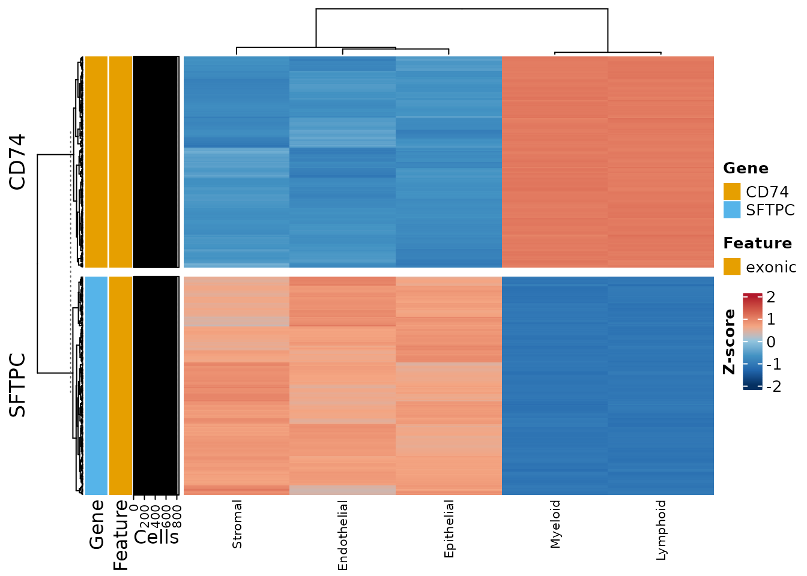

What findDESNPs() actually measures
Read this before using it.
findDESNPs() compares read depth at a variant
position between cell groups. Depth at a position is the
abundance of the transcript containing it — so this is an expression
test, not a genotype test. Germline genotype is fixed within an
individual and cannot differ between that individual’s cell types.
The measurement is real and correctly computed. The question is whether it is the best available instrument, and mostly it is not. Measured on 52,809 cells of a lung transplant cohort against the matched gene count matrix:
| reads captured at SNP positions | 51.3% of the gene matrix |
| expressed genes with no covered SNP | 40.3% |
| median gene: reads retained | 20% (well-covered genes up to 90%) |
| median gene: SNPs carried | 13 |
| correction burden | ~739,000 sites vs ~20,000 genes = 37× stricter |
The coverage is not thin — half of all reads land at SNP positions.
The problem is arithmetic: per test you hold roughly 1.5% of a gene’s
evidence while paying 37 times the multiple-testing penalty, on 60% of
the genes. Seurat’s FindMarkers() on the gene count
matrix strictly dominates this for “which genes differ between these
cell groups.”
Use findDESNPs() for:
- A specific gene you already care about. The multiple-testing argument largely evaporates once you are not scanning.
-
The coverage companion to
findSNPsByGroup()— confirming depth was adequate in the group where a variant was called absent, since otherwise “absent” only means “not detected”. - Checking coverage comparability before comparing allele fractions, since differential depth creates differential power.
Setup
sim <- simulateVariantCellData(verbose = FALSE)
inf <- inferDonorType(sim$metadata, vireo_dir = sim$vireo_dir, verbose = FALSE)
project <- variantCell$new()
for (s in sim$design$sample) {
project$addSampleData(
sample_id = s,
vireo_path = sim$vireo_paths[[s]],
cellsnp_path = sim$cellsnp_paths[[s]],
cell_data = sim$metadata[sim$metadata$Biopsy == s, ],
data_type = "dataframe",
prefix_text = sim$prefixes[[s]],
donor_type = inf$donor_types[[s]]
)
}
project$buildSNPDatabase()
project$setProjectIdentity("compartment")
table(project$snp_database$cell_metadata$compartment)
#>
#> Endothelial Epithelial Lymphoid Myeloid Stromal
#> 68 229 265 175 63The simulator gave each gene a known depth difference between immune and structural cells, so there is a right answer to compare against.
Running the test
res <- project$findDESNPs(
ident.1 = "Myeloid",
ident.2 = "Epithelial",
n_cores = 2
)findDESNPs() returns a list, not a data
frame:
colnames(de)
#> [1] "snp_idx" "chromosome" "position" "ref"
#> [5] "alt" "feature_type" "gene_name" "gene_type"
#> [9] "log2fc" "avg_expr_group1" "avg_expr_group2" "total_cells_1"
#> [13] "total_cells_2" "expr_cells_1" "expr_cells_2" "expr_frac_1"
#> [17] "expr_frac_2" "mean_alt_frac_1" "mean_alt_frac_2" "pvalue"
#> [21] "padj" "percent_change"Note the column names: log2fc, pvalue,
padj — not the Seurat spellings.
top <- head(de[order(de$padj, -abs(de$log2fc)),
c("gene_name", "position", "log2fc", "padj",
"expr_frac_1", "expr_frac_2")], 8)
top
#> gene_name position log2fc padj expr_frac_1
#> 9_134909428_C_A FCN1 134909428 0.6810829 4.568681e-300 0.7828571
#> 9_134908470_G_C FCN1 134908470 0.6734167 4.568681e-300 0.9657143
#> 9_134906576_A_G FCN1 134906576 0.6626048 4.568681e-300 0.1885714
#> 9_134909577_G_C FCN1 134909577 0.6517470 4.568681e-300 0.2571429
#> 9_134908492_T_C FCN1 134908492 0.6499112 4.568681e-300 0.9085714
#> 9_134907449_G_C FCN1 134907449 0.6493934 4.568681e-300 0.4857143
#> 9_134909386_T_G FCN1 134909386 0.6449355 4.568681e-300 0.4000000
#> 9_134907342_C_T FCN1 134907342 0.6405497 4.568681e-300 0.7657143
#> expr_frac_2
#> 9_134909428_C_A 0.4716157
#> 9_134908470_G_C 0.4235808
#> 9_134906576_A_G 0.1135371
#> 9_134909577_G_C 0.3187773
#> 9_134908492_T_C 0.4192140
#> 9_134907449_G_C 0.1135371
#> 9_134909386_T_G 0.2401747
#> 9_134907342_C_T 0.4148472Does it recover the truth?
Aggregate to the gene level and compare against the depth shift the simulator built in:
obs <- tapply(de$log2fc, de$gene_name, median, na.rm = TRUE)
truth <- sim$sites$immune_log2[match(names(obs), sim$sites$gene)]
cmp <- data.frame(gene = names(obs),
observed = round(as.numeric(obs), 2),
simulated = truth)
cmp <- cmp[!is.na(cmp$simulated), ]
cmp[order(cmp$simulated), ]
#> gene observed simulated
#> 12 SFTPC -1.01 -2.5
#> 11 SCGB1A1 -0.87 -2.0
#> 2 CLDN5 -0.70 -1.8
#> 4 DCN -0.70 -1.6
#> 9 PECAM1 -0.64 -1.4
#> 14 VIM -0.21 0.0
#> 7 JAK1 -0.16 0.2
#> 6 IFI6 -0.13 0.4
#> 8 MARCO 0.37 1.4
#> 5 FCN1 0.55 2.0
#> 1 CD74 0.52 2.2The ordering is recovered almost exactly. Two things are worth noticing.
The magnitudes are compressed. With
use_normalized = TRUE (the default), depth is size-factor
normalised and log1p-transformed, so a fold change on that
scale is much smaller than the underlying count ratio. Treat
log2fc as an ordering, not as a count ratio.
A truly null gene does not come back at zero.
VIM was simulated with no difference at all, yet reads as
mildly depleted in myeloid cells. That is compositional normalisation
working correctly: immune cells carry far more CD74,
FCN1 and VCAN reads, which inflates their size
factors and pushes everything else down. The same effect exists in
ordinary RNA-seq. It is a reason to be careful with small effects, not a
bug.
Almost everything is significant:
sprintf("%d of %d sites at padj < 0.05", sum(de$padj < 0.05, na.rm = TRUE), nrow(de))
#> [1] "1609 of 1663 sites at padj < 0.05"That is what testing across ~800 individual cells buys you. Cells
within a library share a genome, a capture and a sequencing run, so they
are not independent observations; treating them as such inflates
significance. This is the standard single-cell DE pseudoreplication
problem and it is the deeper reason not to read this output as a
discovery scan. When the unit of observation matters, aggregate to the
sample — computeAlleleFractionIndex() and
findDEAlleleFraction() do exactly that.
The legitimate use: one gene you already care about
cd74 <- de[de$gene_name == "CD74", ]
sprintf("CD74: %d sites, median log2fc %.2f, %d significant",
nrow(cd74), median(cd74$log2fc, na.rm = TRUE),
sum(cd74$padj < 0.05, na.rm = TRUE))
#> [1] "CD74: 173 sites, median log2fc 0.52, 173 significant"Here you are not scanning, the gene is well covered, and the multiple-testing objection does not apply.
Useful arguments
project$findDESNPs(
ident.1 = "Myeloid",
ident.2 = NULL, # NULL compares against all other cells
donor_type = "Donor", # restrict to one genome
use_normalized = TRUE, # size-factor normalised depth
min_expr_cells = 3, # sites must be seen in this many cells
min_alt_frac = 0.2, # ...at this alt fraction, to be testable
logfc.threshold = 0.1,
p.adjust.method = "BH",
n_cores = 4
)min_alt_frac and min_expr_cells decide
which sites are testable. They do not decide which
cells contribute to the effect size — that runs over all cells in the
group, following the Seurat convention, so the fold change and the
p-value describe the same population.
Alt fractions are always computed from raw AD/DP regardless of
use_normalized, since there is no normalised AD matrix and
dividing a raw count by a log-scaled depth does not produce a
fraction.
Visualising SNPs across cell groups
project$plotSNPHeatmap(
genes = c("CD74", "SFTPC"),
group.by = "compartment",
min_alt_frac = 0,
show_rownames = FALSE # hundreds of sites; labels are unreadable
)
#> Warning: rs# identifiers requested but not available in project. Using chromosome:position format instead.
#>
#> rs# identifiers requested but not available. Using chromosome:position format.
Immune compartments carry the CD74 sites and structural
compartments the SFTPC sites, which is the depth difference
the simulation built in.
To get the underlying matrix instead of the plot:
hm <- project$plotSNPHeatmap(
genes = c("CD74"),
group.by = "compartment",
min_alt_frac = 0,
data_out = TRUE
)
#> Warning: rs# identifiers requested but not available in project. Using chromosome:position format instead.
str(hm, max.level = 1)
#> List of 5
#> $ raw_matrix : num [1:174, 1:5] 1.89 1.71 1.98 1.8 1.94 ...
#> ..- attr(*, "dimnames")=List of 2
#> $ scaled_matrix : num [1:174, 1:5] -0.608 -0.955 -0.774 -0.961 -0.622 ...
#> ..- attr(*, "scaled:center")= Named num [1:174] 2.31 2.34 2.43 2.4 2.35 ...
#> .. ..- attr(*, "names")= chr [1:174] "5_150401642_G_T" "5_150401652_T_G" "5_150401662_A_C" "5_150401672_G_A" ...
#> ..- attr(*, "scaled:scale")= Named num [1:174] 0.696 0.662 0.577 0.628 0.664 ...
#> .. ..- attr(*, "names")= chr [1:174] "5_150401642_G_T" "5_150401652_T_G" "5_150401662_A_C" "5_150401672_G_A" ...
#> ..- attr(*, "dimnames")=List of 2
#> $ cell_counts : num [1:174, 1:5] 229 229 229 229 229 229 229 229 229 229 ...
#> ..- attr(*, "dimnames")=List of 2
#> $ expr_cell_counts: num [1:174, 1:5] 229 229 229 229 229 229 229 229 229 229 ...
#> ..- attr(*, "dimnames")=List of 2
#> $ snp_info :'data.frame': 174 obs. of 8 variables:Extracting cells by SNP status
getCellsForSNPs() returns cell IDs meeting an
allele-fraction and depth criterion, which is how you annotate a Seurat
object with variant status:
Three identifier forms are accepted: the full
CHROM_POS_REF_ALT key, an rs ID if you annotated against a
reference VCF, and plain chromosome:position.
info <- project$snp_database$snp_info
# pick the best-covered site in the database
best <- which.max(Matrix::rowSums(project$snp_database$dp_matrix))
target <- paste(info$CHROM[best], info$POS[best], sep = ":")
carriers <- project$getCellsForSNPs(
snp_ids = target,
min_alt_frac = 0.2,
min_dp = 3
)
attr(carriers, "summary")
#> snp_id snp_found total_cells_with_data cells_meeting_criteria
#> 1 5:150401915 TRUE 715 148
#> mean_alt_frac mean_dp
#> 1 0.1223425 5.262937
head(carriers[[1]], 3)
#> [1] "S1_GGGCGGGTGAACTGCT-1" "S1_TTACGTCTACAGCATG-1" "S1_CGGAGCAGCTTTAGAG-1"Those cell IDs are ready to annotate an external object:
The summary distinguishes cells with any reads at the site from cells that passed both thresholds, which is the difference between “not carrying it” and “not covered”.
Next
-
Group-level DE SNP analysis —
findSNPsByGroup()and the genotype guard. - Building the SNP database — the import path.